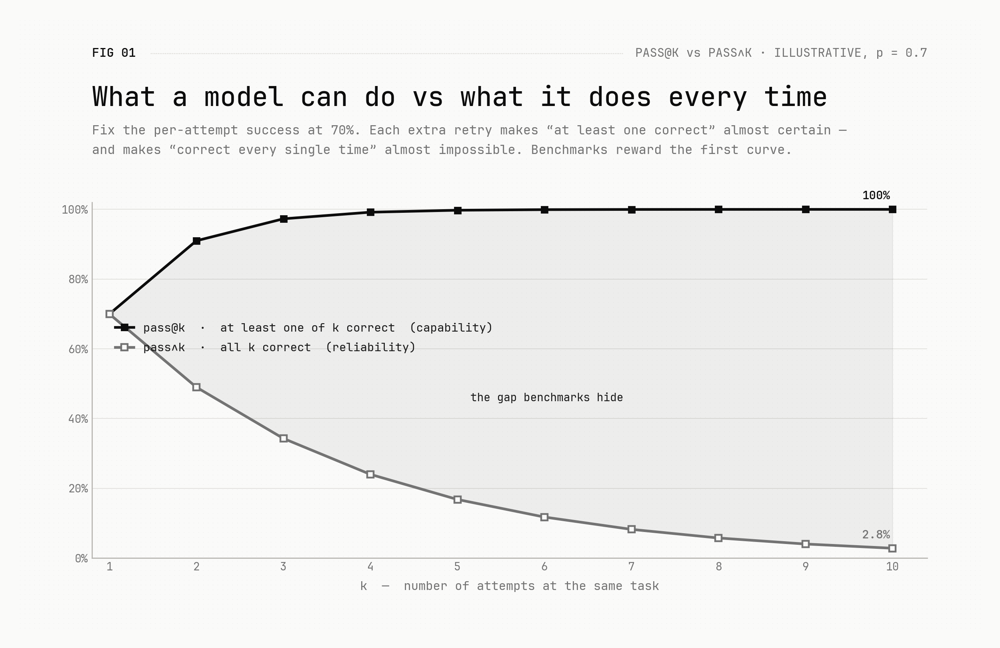

We might be measuring intelligence wrong
One of the most common ways we measure how good an AI model is, is a metric called pass@k. The idea is simple: you let the model produce k answers to a problem, and you count it as a success if at least one of them is correct. It sits behind a lot of the benchmark numbers you see quoted.
And it does tell us something real: that the model is capable of generating the correct answer. Somewhere in those k attempts, the right answer exists.
But here's the catch. In the real world we almost never care about a model that gets it right once in five tries and misses the mark the other four. A coding agent, a customer-service agent, an agent touching a production database — it acts once, and that one action is the one that counts. "At least one of k was right" is cold comfort if you can't tell which one.

For a model to be genuinely useful, it is not enough to generate the right answer — it has to pick it. And picking requires something deeper: real understanding of the problem, and well-placed confidence across its own answers, so it knows which one to trust. That property — landing and recognising the right answer reliably, every time, not just once — is what we'd call reliability (pass∧k, "all k correct"), and it is a different thing from raw capability.
Reliability is improving too. It is just improving more slowly than capability. The headline benchmark numbers — the pass@k curve — have raced ahead, while the model's ability to reliably produce and recognise the right answer has crept up behind them.
That slower rate isn't necessarily alarming. It looks like we are still converging towards more reliable AI, just on a gentler slope. What's worth keeping in mind is the distinction itself. It is at least one clean reason why the genuinely impressive numbers announced every month don't always translate into impressive performance on the critical, agentic tasks people actually want to hand off. We have been measuring, and rewarding, what a model can do. Deployment depends on what it does every time.